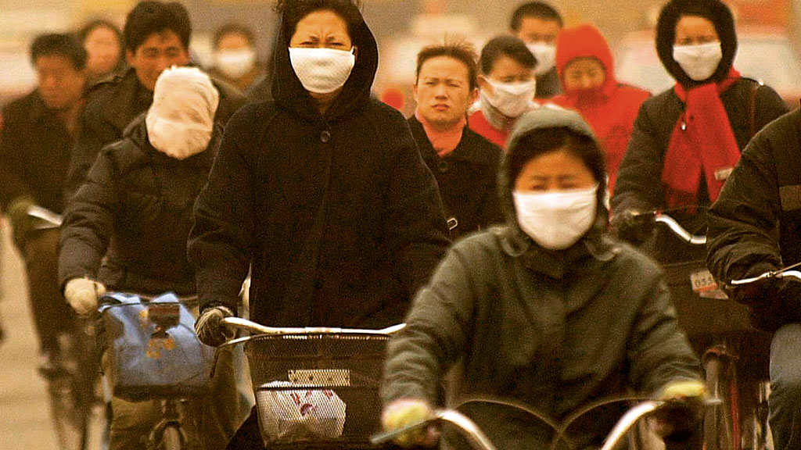

De acordo com um relatório da OMS de 2021, uma das emergências de saúde é causada pelo tempo e pelo clima. mais urgentes que estão sendo enfrentados no momento. Em outubro de 2021, pelo menos 300 organizações, 45 Milhões de profissionais de saúde enviaram uma carta aberta apelando ao empenho da comunidade. internacional de ações climáticas. Como profissionais de saúde, reconhecemos nossa responsabilidade moral de discutir essa crise em rápido desenvolvimento, que pode ser muito mais devastadora e prolongada do que a vírus do COVID-19. Nós exigimos que os governos cumpram suas obrigações de proteger seus cidadãos. pessoas próximas e gerações futuras afetadas pela crise climática”, afirmam em um trecho da carta.
O informe do Painel Intergovernamental de Mudanças Climáticas (IPCC), divulgado pela Organização Mundial da Saúde (OMS) em agosto de 2022, indica que as mudanças climáticas estão progredindo pior e em um ritmo maior do que se esperava. dez anos por volta de 2030 A temperatura da Terra pode aumentar mais de 1,5°C antes do previsto.
O IPCC afirma que se a temperatura do planeta aumentar mais de 2°C, os efeitos podem ser graves e amplos. Em caso de ocorra, cerca de um terço da população mundial seria regularmente exposta a temperaturas extremas, recifes de corais de A água quente seria eliminada e o gelo do mar Ártico derreteria completamente em pelo menos dez anos de verão.
Além disso, as mudanças climáticas aumentam a probabilidade de surgimento de novas pandemias e doenças infecciosas. Por exemplo, podemos observar sua influência no aumento da temperatura do planeta, que é responsável pela morte e pelos processos de hipertermia (quando o corpo experimenta um aumento acentuado de temperatura). Ricardo Heinzelmann, médico e professor do Departamento de Saúde Coletiva da Universidade Federal de Santa Maria (UFSM), explica que o maior volume de chuvas e desastres também é outra condição que eleva o risco de doenças infecto-contagiosas, como leptospirose, hepatites, dengue, chikungunya e zika.
Além disso, os extremos de temperatura e umidade estão entre os principais fatores que podem afetar a saúde humana. O calor e o frio podem aumentar em intensidade e afetar vários sistemas do nosso corpo. O frio está associado a doenças respiratórias, mas também pode afetar o sistema circulatório.
Iago Turba da Costa, doutorando em Geografia na UFSM, estudou como as ondas de frio podem afetar a saúde de pessoas com predisposição a doenças cardíacas. Como a tendência natural do corpo a encolher quando está frio, o desconforto térmico aumenta a probabilidade de piora do quadro, de acordo com o pesquisador. A vasoconstrição segue. O coração desses pacientes cardiovasculares bate mais rapidamente porque seus vasos sanguíneos são normalmente gordurosos.
Além disso, eventos extremos causam mudanças na pressão atmosférica, que afetam a pressão sanguínea. Quando ocorrem processos extremos, o corpo não responde tão bem fisiologicamente e as pessoas que já têm problemas tendem a ter sintomas piores. Iago explica: "Muitas vezes, a pessoa precisa de uma internação de urgência, que pode levar à morte."
As pessoas ficarão acostumadas a viver nesses ambientes, explica Cássio Arthur Wollmann, professor do Departamento de Geografia e responsável pelo Laboratório de Climatologia em Ambientes Subtropicais da UFSM. Embora o clima global tenha se tornado mais quente ao longo dos anos, isso não significa que nunca mais vai fazer frio. O professor esclarece: "As ondas de frio vão continuar e, no momento em que atingirem esse corpo ambientado ao calor, a saúde das pessoas ficará extremamente comprometida e frágil."
Ricardo Heinzelmann afirma que o aumento dos incêndios florestais naturais causados pelo aquecimento do clima constitui outro problema. Alerta: "Os incêndios geram ondas de fumaça que podem desenvolver nos seres humanos graves problemas respiratórios, como a descompensação pulmonar, que podem levar a hospitalizações".
Em seu relatório da Plataforma Intergovernamental sobre Biodiversidade e Serviços Ecossistêmicos (IPBES), a ONU enfatiza o impacto das ações humanas no surgimento de novas pandemias, em vista das altas taxas de desmatamento e da consequente perda de biodiversidade em todo o mundo. A publicação afirma que cerca de cinco novas doenças surgem todos os anos, todas com potencial de se tornar pandêmicas..
A desregulação dos processos ambientais naturais é causada pelas mudanças climáticas, que alteram as condições ambientais. O aumento das temperaturas causa não apenas a propagação de novas doenças, mas também o ressurgimento de doenças que já estão dormentes. "Tudo indica que novas pandemias e epidemias vão se tornar mais comuns, e o ser humano vai viver um período de grande instabilidade. Ricardo diz que fomos nós que criamos esse cenário sombrio.
Além disso, o médico enfatiza que os sistemas de saúde atuais não estão preparados para lidar com as novas necessidades criadas pela emergência climática. O sistema lida com certas doenças, diz o professor Cássio, mas a situação pode piorar com o surgimento de novas doenças. O aquecimento global pode causar doenças tropicais em locais onde as pessoas estão mais acostumadas com o frio. Destaca que isso é um problema significativo, pois o sistema não estará apto quando uma doença se tornar mais comum na região.
